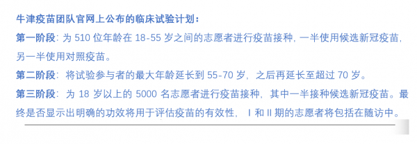

全球疫苗之路｜英国 抢先进入Ⅲ期试验，已获最多预购订单
9月，全球很可能正式迎来第一支新冠疫苗面世。此时距离已知的首例新冠肺炎病例被发现，还不足10个月。这一速度远超一般疫苗研发所需的8-10年时间。

全球研发者争分夺秒，170款候选疫苗涌入赛道。
其中，来自中国（4）、美国（2）、英国（1）的共7款候选疫苗率先进入Ⅲ期临床试验的最后冲刺阶段，俄罗斯疫苗“卫星V”异军突起同样备受关注。
与此同时，以各国政府为代表的全球买家也已抢先下单，“疫苗争夺战”一触即发。
澎湃国际推出“全球疫苗之路”系列报道，全面剖析疫苗研发赛道上的“竞速者”们。
8月3日，英国政府与印度制药公司Wockhardt达成一项协议，买下了Wockhardt公司位于英国威尔士北部雷克瑟姆工厂一条生产线未来18个月的专用权。一旦有英国政府订购的候选疫苗面市，大量的疫苗药水将被运往这家工厂，被灌装进小药瓶或注射器中，随即再被运往英国乃至全球各地的医院、诊所与消费者手中。
Wockhardt工厂的生产线预计不会空悬太久。在英国政府的现有订单中，备受期待的、由英国牛津大学詹纳研究所疫苗学教授莎拉·吉尔伯特（Sarah Gilbert）领导的研发团队和阿斯利康制药公司合作研制的新冠候选疫苗AZD1222预计最快将于9月投入使用。
据医学期刊《柳叶刀》7月刊文介绍，AZD1222于4月23日至5月21日针对1077名受试者开展的Ⅰ/Ⅱ期临床试验显示，这款新冠候选疫苗在所有评估的受试者中均被耐受，并产生针对新冠病毒的强大免疫应答，此外也不会引起严重副作用。
早在这一结果公开发布之前的5月底，AZD1222已逐步在英国、巴西、南非等地开启了Ⅱ/Ⅲ期临床试验，成为全球最早进入Ⅲ期试验的新冠候选疫苗。8月，这一试验的范围还扩展到新冠确诊和病亡人数最多的美国。
“在得到（新冠）病毒基因序列不到100天的时间里，莎拉和她的团队就能开始疫苗的临床试验，这真的很令人震惊。”牛津大学高级医学教授约翰·贝尔7月底接受《金融时报》采访时评价道。
英国广播公司（BBC）则称，AZD1222（原名ChAdOx1 nCoV-19）的项目进展超出预期。英国政府疫苗工作组主席凯特·宾厄姆则在7月初表示，吉尔伯特领导的疫苗团队远远领先于世界，他们研发的是“世界上最先进的疫苗”。
然而，美国国家过敏和传染病研究所所长安东尼·福奇对牛津大学团队在疫苗研发上的领先势头提出了警告。他告诉BBC称，“是暂时领先，还是已经拥有一种真正有效的疫苗，必须得到认真评估。”
目前，这款由牛津团队研发、阿斯利康负责发行的新冠候选疫苗，已获得了全球最大数量的预订单。
起步
58岁的吉尔伯特经常会在凌晨四点醒来，因为“脑子里有很多问题”，醒来之后她通常在家工作几个小时，然后再骑自行车去研究所，在那里她会一直工作到晚上。
澎湃新闻（www.thepaper.cn）4月给吉尔伯特团队发出采访邀请时收到的邮件回复称，该团队的研究人员正在紧张专注地研制新冠疫苗，无法在此期间回应媒体。彭博社记者亦在其7月15日的一篇报道中指出，吉尔伯特展现出超级高效、严肃的作风，该团队可能正处于取得突破性进展的关键时刻，没有一分钟空闲。
如此的争分夺秒，源于吉尔伯特此前一段不太成功的疫苗研发经历——2014年，吉尔伯特所在的詹纳研究所曾领导了一款埃博拉疫苗的第一次试验，然而，没等疫苗研制成功，疫情就已结束了。这段经历让吉尔伯特和她的团队认识到了速度的重要性。
武汉暴发新冠肺炎疫情伊始，吉尔伯特就开始关注。“当时我们不知道（疫情）早期的传播情况，但我和同事们聊天时想，等基因序列一出来，我们就做点事情。”
1月7日，中国疾控中心成功分离新冠病毒毒株，12日中方向世卫组织提交新冠病毒基因组序列信息后，吉尔伯特立即和她的团队开始了工作。此后团队人数也从最开始的几人扩展到约250人。
腺病毒载体疫苗是目前全球各大新冠疫苗研发团队运用的主要技术路线之一，这是一种较为成熟的疫苗技术路线，安全、高效、引发的不良反应少。不过这类疫苗最大的问题是如何克服“预存免疫”问题：由于腺病毒在人类中传播，因此有许多人具有免疫力。牛津大学研发的AZD1222使用黑猩猩腺病毒作为载体，这种载体与人类腺病毒的差异非常大，因此大多数人的免疫系统不会立即对其做出反应，以解决“预存免疫”问题。
牛津大学拥有自己的疫苗生产设施，可以为吉尔伯特团队快速生产用于早期试验的疫苗，之后这些疫苗又被转交给意大利一家生产商，计划先期生产1000剂用于临床试验。2月17日，吉尔伯特的团队开始给老鼠注射疫苗。
随后，围绕是应该直接进行人体试验，还是先看看另一项猴子试验结果，研发团队内部进行了权衡讨论。
在2003年“非典”（SARS）病毒的疫苗试验中，一些接种疫苗的动物比未接种疫苗的动物病情更严重，这种现象被称为抗体依赖性增强（ADE）。由于担心新冠疫苗可能会再次出现这种情况，吉尔伯特团队决定在美国蒙大拿州洛基山实验室的猴子身上进行测试，以排除这种可能性。
彼时，新冠肺炎疫情已蔓延至全球，大量患者相继病亡，等待猴子试验的结果意味着团队将失去关键的几个星期。但最终，吉尔伯特团队决定谨慎行事。
4月中旬，蒙大拿州传来了猴子试验的结果。5月中旬，牛津大学在预印版网站BioRxiv上披露了该疫苗相关动物实验数据，批评声接踵而至。数据显示参与疫苗注射的恒河猴均感染了新冠病毒，其中3只猴子感染后呼吸加速，症状明显，被视为疫苗效果不理想的证据。
曾在哈佛医学院担任教授的威廉·哈兹尔廷（William Haseltine）随后在《福布斯》杂志上发表了一篇文章，认为牛津疫苗似乎只能起到部分保护作用，因为它不会产生可以保护细胞免受感染的中和性抗体。他在接受彭博社采访时表示，“我的猜测是牛津疫苗对老年人来说不够强大，所以他们必须提高疫苗的效力，而提高疫苗的效力可能会产生副作用。”

来源：澎湃新闻
尽管存在争议，研发团队仍认为动物试验的结果显示出一些乐观迹象。于是在4月末该初步结果公布的第二天，吉尔伯特的同事安德鲁·波拉德领导的一个小组就开始进行为期约一个月的第一阶段临床试验。
7月20日出炉的AZD1222候选疫苗Ⅰ/Ⅱ期临床试验的结果颇为乐观。
在此期间，吉尔伯特的三胞胎——三个正在攻读生物化学专业的21岁学生也作为志愿者参与了第一阶段试验。
由于忙于疫苗研发，吉尔伯特甚至没有与孩子们商量这件事，但是她并不感到担心。“我知道发生不良反应可能出现的情况，也知道使用的剂量，因为我们团队已经做过无数次测试了，这（疫苗）很安全，所以我并不担心。”吉尔伯特说。
据阿斯利康介绍，《柳叶刀》杂志发表的结果证实，单剂AZD1222可使注射后一个月内95％的参与者的新冠病毒刺突蛋白抗体增加四倍。在所有1077名参与者中诱导了T细胞反应，在第14天达到峰值，并在注射后两个月保持。接种疫苗一个月后有91％的参与者和接受第二剂的100％的参与者看到了针对新冠病毒的中和活性。
阿斯利康生物医药研发执行副总裁Mene Pangalos称，对上述数据“感到鼓舞”。
加速
通常情况下，大多数疫苗开发计划都需要五年以上的时间，最快也需要至少12到18个月。然而，目前全世界的新冠确诊病例仍以每天20万+的速度递增，各国都在盼着一支安全、有效的疫苗来扭转局面。
为了加快疫苗研发的速度，早在进行动物试验的同一时间，吉尔伯特团队就着手向监管机构申请进行人体试验，并与疫苗生产商进行谈判。
3月初，到处筹钱的吉尔伯特从流行病防范创新联盟（Coalition for Epidemic pretation Innovations，简称CEPI）获得了一笔小额赠款。但这并不足够，吉尔伯特团队仍寻求与大型制药公司进行合作，却屡屡碰壁。詹纳研究所主任艾德里安•希尔（Adrian Hill）教授表示，大多数资助者认为他们做不到（研制出疫苗）。
转机出现在3月下旬。
3月23日，英国首相鲍里斯·约翰逊下令封锁全国，同日，政府宣布向吉尔伯特的团队提供220万英镑（约合人民币2000万）的拨款，用于支持疫苗的测试和生产。
4月初，阿斯利康生物制药研发主管梅内·潘加洛斯（Mene Pangalos）在得知牛津大学詹纳研究所团队研发的疫苗正出现一些积极信号后，主动联系上后者，最终双方达成了合作协议，由阿斯利康公司负责全球分销和生产这种尚未研发成功的疫苗。
后来，英国政府又再度加码，向实验室提供6500万英镑，以求能在9月获得量产疫苗。
除了向研发团队注资推动疫苗研发工作，英国政府还采取了多重手段力求疫苗能在试验完成后的第一时间投入应用。
据BBC报道，希尔教授在4月的一场网络简报会上告诉记者，他们不仅已经开始小规模生产这种尚在试验阶段的疫苗，而且还在全球7个地区有生产商，三个在英国，两个在欧洲，一个在印度，一个在中国。“我们的目标是到9月份左右，至少有100万剂疫苗就绪，那时我们也拿到了最终的试验结果。”
但是该团队从未表态，如果疫苗临床结果发现不安全不适合接种，那上述100万剂疫苗将作何处理。
此外，前期因抗疫不力并有意尝试“群体免疫”策略而饱受诟病的英国政府此次对待疫苗却相当认真。
英国政府网站信息显示，就在7月20日牛津疫苗团队宣布取得重大进展后，政府又追加了1亿英镑确保该候选疫苗今后可在英国实现大规模生产。这笔投资将用于新建一个每月可生产数百万剂疫苗的创新中心，拟于2021年12月正式开放。
而8月初与Wockhardt公司达成的一项协议生产线专用协议，则确保了在上述创新中心开放之前，疫苗在英国本土的生产，也是英国政府为未来的疫苗供应“后勤保障”而采取的最新一步。
此外，8月28日，英国政府表示拟采取包括修改有关法规在内的一系列新措施，以允许监管机构临时授权紧急使用安全有效性已获证明的新冠疫苗，以加速疫苗的上市。
除了保证本国疫苗的研发、生产与上市外，英国政府还分别向多个国家的疫苗研发团队订购了候选疫苗，并于5月成立了疫苗工作组（VTF）以寻找有希望的疫苗候选产品组合，以确保英国人尽快获得临床有效和安全的疫苗。
截至目前，英国政府已订购了6款不同的进入临床试验阶段的候选疫苗，总量达3.4亿剂。如果全部成交，相当于6665 万英国人平均每人可得到5剂新冠疫苗。此外，一项由英国剑桥大学、南安普敦大学医院国民保健制度信托基金会等机构合作研发的疫苗（DIOS-CoVax2）研发，也获得了英国政府190万英镑的资金支持，计划在今年秋季晚期或明年初开始临床试验。
目前，世界上大多数正在研制的疫苗都没有获得最终许可。尽管如此，吉尔伯特对自己团队的成功率却表现出极大的信心，她认为牛津疫苗有80%的可能性可以有效阻止接触新冠病毒的人被感染。7月初，当英国议员问她如果没有疫苗，世界是否将不得不艰难度过下个冬天时，吉尔伯特说，“希望我们团队赶在这前面取得成果，来拯救这个局面。”
竞购
如今，作为全球新冠疫苗研发第一梯队中最亮眼项目之一的AZD1222，已收获了来自多个国家的订单。
据澎湃新闻不完全统计，牛津-阿斯利康疫苗已获得总共逾25亿剂订单，成为全球预定量最多的一款候选疫苗。该公司也曾承诺在全球范围内同步建立多个供应链，为全球提供超过20亿剂新冠疫苗。
早在5月中旬，美国就向阿斯利康订购了3亿剂疫苗，提供了高达12亿美元的资金。此外，阿斯利康向英国政府承诺提供总计1亿剂疫苗，其中3000万剂最早将于9月分发给英国民众使用。
6月4日，阿斯利康宣布与由世卫组织、流行病防范创新联盟（CEPI）、疫苗联盟Gavi等参与的新冠疫苗全球获取机制（COVAX）达成了7.5亿美元的协议，以支持3亿剂疫苗的生产、采购和分销，并于今年年底开始交付，这也是COVAX自宣布成立以来的第一笔订单。
同一天，荷兰卫生部宣布，荷兰、意大利、德国和法国将结成“欧洲包容性疫苗联盟”（IVA），共同研发针对新冠病毒的疫苗。他们首批订单押宝阿斯利康，购买了3亿剂疫苗，包括如果疫苗最终被证明安全有效，还有权向阿斯利康另外加购1亿剂疫苗的选项。《华尔街日报》报道称，这不超过4亿剂疫苗的供应将是零利率的。
8月7日，印度血清研究所（SII）与阿斯利康签订合同，负责在印度进行该疫苗的部分人体试验，并承诺在疫苗通过鉴定之后，在印度生产10亿剂用于印度市场，以及提供给疫苗联盟（GAVI），以供贫困国家使用，可涵盖57个国家和地区。由于牛津大学和阿斯利康曾表示将以成本价出售该疫苗，印度医学研究委员会估计，该款疫苗在印度市场每一剂的售价将在1000卢比左右（不到100元人民币）。
同时，阿斯利康还在8月与日本、澳大利亚达成协议。该公司拟于2021年1月起向日本供应1.2亿支疫苗，其中1月至3月将首批供应3000万支。澳大利亚政府则在与阿斯利康签署意向后于8月18日承诺，该款疫苗一旦研发成功，将向该国2500万民众免费提供。
8月12日，墨西哥和阿根廷也与阿斯利康达成协议，获得了该疫苗的技术转让和1.5亿至2.5亿剂疫苗的生产许可，以供（除巴西外）整个拉丁美洲使用，预计将在2021年上半年交付。
8月27日，欧盟委员会表示已与阿斯利康签署新冠疫苗购买协议并支付定金。这是欧盟签署的第一份新冠候选疫苗订购协议。欧盟委员会一名发言人说，欧盟已支付3.36亿欧元（约合3.96亿美元）定金，向阿斯利康制药公司订购至少3亿剂疫苗。
不久前，中国康泰生物也与阿斯利康达成合作，根据合作框架协议条款约定，康泰生物作为技术受让方，将确保在2020年底前达到至少1亿剂该款新冠疫苗的年产能，并在2021年底前将该疫苗设计产能扩大至年产至少2亿剂，以满足中国市场的需求。
不过，尽管各国正密集“买买买”，争取抢先下单候选疫苗，但在未来疫苗研制成功后，要想顺利生产、运输数以十亿计的疫苗也可能是制药业历史上最大的挑战。
阿斯利康首席技术官詹姆斯·米斯金（James Miskin）向彭博社记者描述了疫苗的生产过程：首先培育几毫升的人类胚胎肾细胞，然后将它们保存在一个需要逐渐解冻的冷冻小瓶中。当细胞被喂食糖溶液时，它们在氧气和二氧化碳的可控环境中繁殖。在一周的时间里，混合物被转移到越来越大的容器中，最终进入一个200升的不锈钢生物反应器。疫苗的主种子库——其中含有穗蛋白的腺病毒被添加到这种粘稠的混合物中，然后搅拌、纯化、浓缩和过滤。
由英国政府资助的疫苗制造和创新中心（VMIC）CEO马修·杜查尔斯（Matthew Duchars）表示，光是按比例增加到数百万剂量这一过程就充满了很大的未知数。
不止于此，《商业内幕》网站7月25日的一篇文章指出，当疫苗瓶出厂时，其旅程的最后一公里可能是最大的挑战。很多疫苗需要放在冰柜或冰箱中储存。而在这一方面，AZD1222这类基于腺病毒的疫苗比其他候选疫苗更有优势：它们只需要冷藏而不是冷冻，这使得它们更容易在全球范围内传播。
“如果牛津大学的疫苗成功了，其他疫苗也会成功。”吉尔伯特在今年5月的联合国演讲上表示，“我们从埃博拉中吸取的教训之一，就是必须让多种疫苗获得许可，而不是最终形成垄断。
- 上一篇：疫情尚未结束，旅行期间注意事项 2020/9/2
- 下一篇：人人游华语导游培训开课通知 2020/9/1